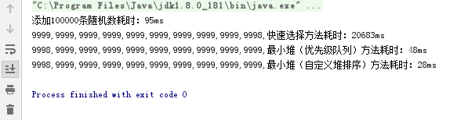
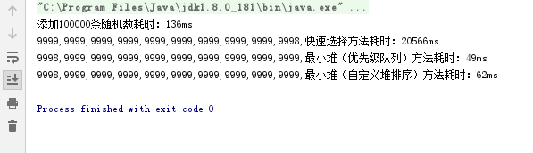

记某互联网公司面试经历（一）
非常有幸得到这个面试的机会，让我亲身感受到大互联网公司的工作氛围及环境，虽然面试失败，但是有收获就有足够的意义，希望自己可以再接再厉。下面是我遇到的一些面试问题，做下记录，如有问题欢迎指出。（WX：npz-devil）
大数据处理之Top K问题
- 10万条数据 –> 用户积分 –> 找出前10的积分 TOP10 复杂度？空间复杂度和时间复杂度
分析：典型的TopK Elements问题，刚开始看到这道题，我立马想到的是最近看的用快速选择的方法，因为找到Kth Element后，遍历数组，所有小于等于Kth Element的元素就是TopK Element。但是后来我又了解到一种利用堆排序（最小堆/最大堆 – 完全二叉树）的方法解决，以前貌似看过，没有去深入了解，以下是代码：
/**
* 快速选择方法
* @param nums
* @param k
*/
public static void kthElement(int[] nums,int k){
int[] c = new int[k];
k = nums.length-k;
int i = 0;
int j = nums.length-1;
while (i<j){
int h = partition(nums,i,j);
if(h>k){
j = h-1;
}else if(h<k){
i = h+1;
}else if(h==k){
break;
}
}
for (int l = nums.length-1; l >=k ; l--) {
System.out.print(nums[l]+",");
}
}
/**
* 左右分开大小值
*/
public static int partition(int[] a,int i,int j){
int l = i;
int h = j+1;
while (true){
while (a[++l]<a[i]&&l<j);
while (a[--h]>a[i]&&h>i);
if(l>=h){
break;
}
swap(a,l,h);
}
swap(a,i,h);
return i;
}
/**
* 交换值
*/
public static void swap(int[] nums,int i,int j){
int t = nums[i];
nums[i] = nums[j];
nums[j] = t;
}
以上是通过快速选择的方法实现的TopK问题，下面是通过优先级队列实现的最小堆解决方式
/**
* 最小堆：使用优先级队列
*/
public static void findKElement(int[] nums, int k){
PriorityQueue<Integer> queue = new PriorityQueue();
for(int val:nums){
queue.add(val);
if(queue.size()>k){
queue.poll();
}
}
while (!queue.isEmpty()){
System.out.print(queue.peek()+",");
queue.poll();
}
}
第三种方法是自己实现一个最小堆，即一个完全二叉树，每个孩子节点的值都大于父节点。大致分为以下步骤：
建堆（升序建大堆，降序建小堆）
堆排序：
- 交换数据
- 调整堆
以下为代码：1.建堆以及堆排序
public class Heap<T> {
//以数组形式存储堆元素
private T[] heap;
//用于比较堆中的元素。c.compare(根,叶子) > 0
//使用相反的Comparator可以创建最大堆、最小堆
private Comparator<? super T> comparator;
//初始化堆
public Heap(T[] heap, Comparator<? super T> comparator) {
this.heap = heap;
this.comparator = comparator;
buildHeap();
}
//返回值为i/2
private int parent(int i) {
return (i - 1) >> 1;
}
//返回指定节点的left子节点数组索引。相当于2*(i+1)-1
private int left(int i) {
return ((i + 1) << 1) - 1;
}
//返回指定节点的right子节点数组索引。相当于2*(i+1)
private int right(int i) {
return (i + 1) << 1;
}
//堆化，i是堆化的起始节点
private void heapify(int i) {
heapify(i, heap.length);
}
//堆化，i是堆化的起始节点，size是堆化的范围
private void heapify(int i, int size) {
int l = left(i);
int r = right(i);
int next = i;
if (l < size && comparator.compare(heap[l], heap[i]) > 0)
next = l;
if (r < size && comparator.compare(heap[r], heap[next]) > 0)
next = r;
if (i == next)
return;
swap(i, next);
heapify(next, size);
}
//对堆排序
public void sort() {
// buildHeap();
for (int i = heap.length - 1; i > 0; i--) {
swap(0, i);
heapify(0, i);
}
}
//交换数组值
private void swap(int i, int j) {
T tmp = heap[i];
heap[i] = heap[j];
heap[j] = tmp;
}
//创建堆
private void buildHeap() {
for (int i = (heap.length) / 2 - 1; i >= 0; i--) {
heapify(i);
}
}
public void setRoot(T root) {
heap[0] = root;
heapify(0);
}
public T root() {
return heap[0];
}
}
2.TopK筛选
public class TopK {
public static int[] toPrimitive(Integer array[]) {
if (array == null)
return null;
if (array.length == 0)
return new int[0];
int result[] = new int[array.length];
for (int i = 0; i < array.length; i++){
result[i] = array[i].intValue();
}
return result;
}
public static int[] topK(int[] array, int n) {
if (n >= array.length) {
return array;
}
Integer[] topn = new Integer[n];
for (int i = 0; i < topn.length; i++) {
topn[i] = array[i];
}
Heap<Integer> heap = new Heap<Integer>(topn, new Comparator<Integer>() {
@Override
public int compare(Integer o1, Integer o2) {
// 生成最大堆使用o1-o2,生成最小堆使用o2-o1
return o2 - o1;
}
});
for (int i = n; i < array.length; i++) {
int value = array[i];
int min = heap.root();
if (value > min) {
heap.setRoot(value);
}
}
return toPrimitive(topn);
}
}
三种方法运行多次耗时比较：


分析：我分别在数组中随机加入100000个整型，用以上三种方法找出TopK的耗时，毫无疑问用快速选择的方法在数据量大的时候耗时非常长，（快速选择）时间复杂度 O(N)，空间复杂度 O(1) ，N越大，时间复杂度越高，属于线性阶，而用最小堆的方式则可以轻松应对大数据量查询Topk的问题，但是利用优先级队列实现的最小堆和自定义实现的最小堆的耗时会有10几ms的差距，偶尔优先级的快，偶尔自定义的快。PriorityQueue本质也是一个堆，也是通过完全二叉树实现的最小堆，所以两者的(最小堆)时间复杂度 O(NlogK)，空间复杂度 O(K)应该是一样的，至于两者为何会出现10ms左右的差距还有待研究。
完全二叉树：二叉树的一种，由满二叉树而引出来的。对于深度为K的，有n个结点的二叉树，当且仅当其每一个结点都与深度为K的满二叉树中编号从1至n的结点一一对应时称之为完全二叉树。也可以定义为若设二叉树的深度为h，除第 h 层外，其它各层 (1～h-1) 的结点数都达到最大个数，第 h 层所有的结点都连续集中在最左边，这就是完全二叉树。